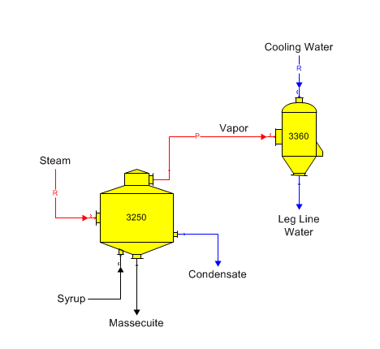

The temperature of the water flow leaving the condenser is normally set to control the cold-water flow into a direct-contact condenser. Temperature Out or Approach is usually set to a value that is equal to the leg line water temperature as measured in the factory, or to a temperature that is below the saturation temperature for the vapor so that the vapor will condense. Also, the cold water flow can be set to a ratio of the vapor flow in, to a specified quantity, or to the minimum cold water flow necessary to condense the entire vapor flow. Contact condensers are used to condense pan and evaporator vapors. The diagram below shows a contact condenser condensing pan vapor using cooling water from an external source. The input data for the condenser is the temperature of the combined condensed vapor and warm water out (i.e., condenser or leg line water). Pressure feedback is used in this example for the pressure of the vapor leaving the pan; and hence, an internal (vacuum) pressure is needed.

The window below shows the input data window for the condenser. Entries are shown for the name, internal (vacuum) pressure and the output temperature.
If pressure feedback isn’t used, the Output Flow Temperature Out or Temperature Approach entry is usually the only entry needed other than the Station Name of the condenser.